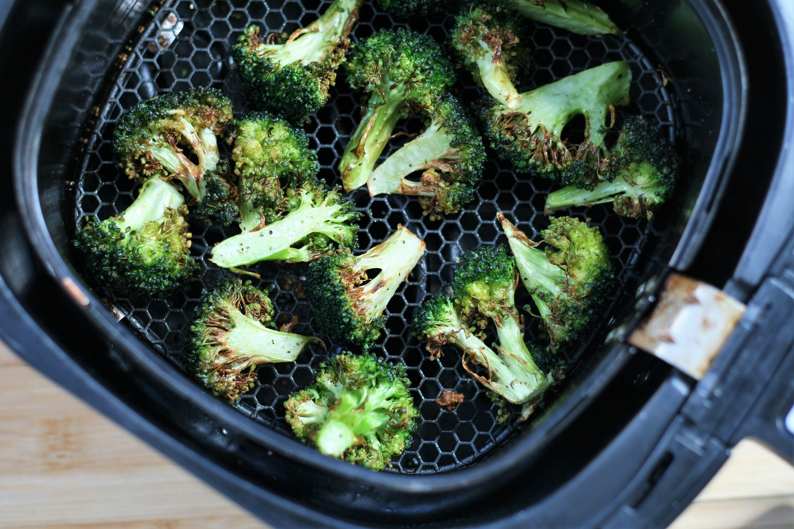

Air-Fried Broccoli

Description
If you love your greens. this is the dish for you!
I'll tell you! This is my favorite way to make broccoli!
Ingredients
- One head fresh broccoli, cut into florets
- ¼ cup olive oil
- salt and ground black pepper to taste
Directions
- Combine broccoli, olive oil, salt, and pepper in a resealable bag. Set aside to allow the broccoli to soak up the oil, about 30 minutes.
- Preheat the air fryer to 375 degrees F (190 degrees C).
- Place broccoli in the air fryer basket and cook until desired crispiness, 10 to 15 minutes, shaking air fryer basket halfway through cook time.
Click to return to list of recipes